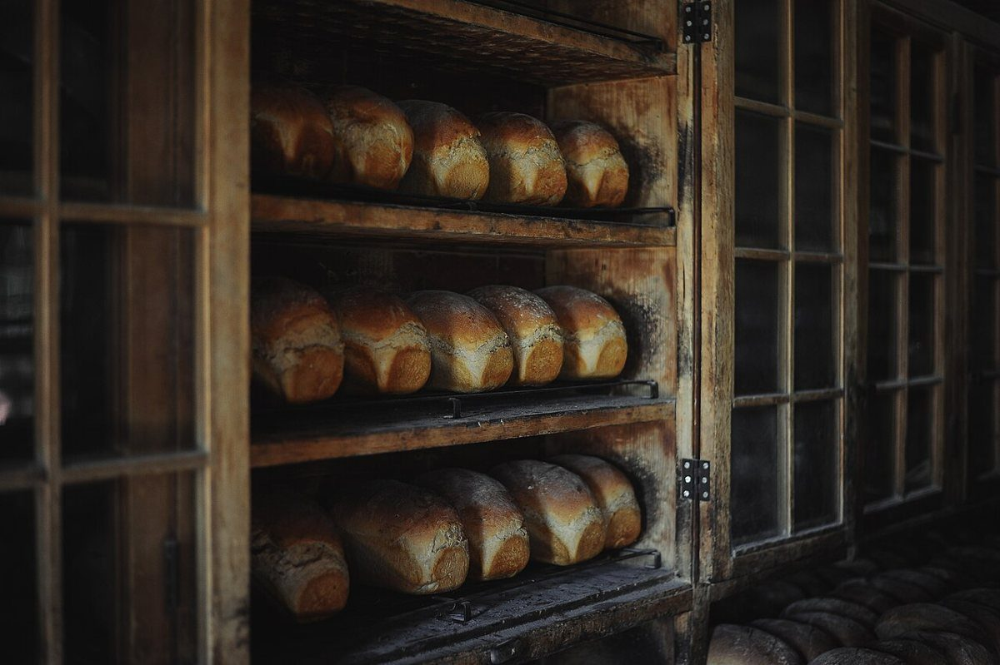
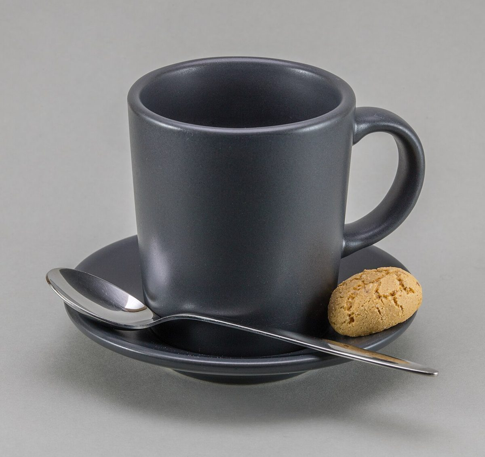

店のこと
店のこと
お店について確認できているのは、所在地・電話番号・Instagramのアカウントです。
このページの「想像してみる」部分は、制作側が想像して書いたものです。お店の実際の様子・考え・メニューとは関係がありません。
確認できていること
- 店名は「ぱんカフェcoduchi」、業種はパン屋・カフェ
- 所在地は大分県大分市東野台1丁目17-7(〒870-0867)
- 電話番号は097-549-3963
- Instagramは @paincafecoduchi
- 営業時間・定休日・メニュー・価格・ご予約・駐車場は準備中

想像してみる
「ぱんカフェ」という名前から
由来は分かりません。制作側は、パンと飲み物の両方を思い浮かべられる名前だと感じました。実際にどんなものを扱うお店かは分からないため、ここでは写真もすべてイメージとして並べています(実際のお店の姿ではありません)。

